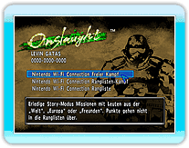

18 |
Nintendo Wi-Fi Connection |
 |
|

Mit der Verwendung der Nintendo Wi-Fi Connection ist das Spielen gegen andere Spieler weltweit möglich.
Im Story Modus erscheinen nur Spielercharaktere, keine NPCs. Das Angreifen von anderen Spielercharakteren ist möglich, reduziert aber die eigene Punktzahl. Wenn das Leben auf 0 heruntersinkt sind die Punkte verloren und es wird an einem der Respawnpunkte im Level neugestartet.
Story Modus Missionen spielen.
● Anzahl der Spieler
● Auswählbare Missionen
● Auswählbare Waffen
● Aufnahme der Höchstpunktzahl in die
Nintendo Wi-Fi Connection Ranglisten-Kampfmissionen spielen.
● Anzahl der Spieler
● Auswählbare Missionen
● Auswählbare Waffen
● Aufnahme der Höchstpunktzahl in die |
 |
 |
 |